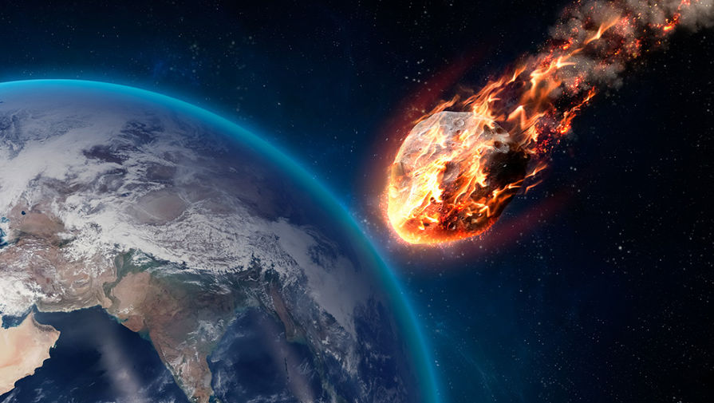

Метеорит — тело космического происхождения, упавшее на поверхность крупного небесного объекта. Большинство найденных метеоритов имеют массу от нескольких граммов до нескольких десятков тонн (крупнейший из найденных метеоритов — Гоба, масса которого, по подсчетам, составляла около 60 тонн). Полагают, что в сутки на Землю падает 5—6 тонн метеоритов, или 2 тысячи тонн в год.

Космическое тело размером до нескольких метров, летящее по орбите и попадающее в атмосферу Земли, называется метеорным телом, или метеороидом. Более крупные тела называются астероидами. Явления, порождаемые при прохождении метеорными телами через атмосферу Земли, носят названия метеоров или, в общем случае, метеоритным дождём; особо яркие метеоры называют болидами. Твёрдое тело космического происхождения, упавшее на поверхность Земли, называется метеоритом. На месте падения крупного метеорита может образоваться кратер (астроблема). Один из самых известных кратеров в мире — Аризонский. Предполагается, что наибольший метеоритный кратер на Земле — Кратер Земли Уилкса (диаметр около 500 км). Наиболее часто встречаются каменные метеориты (92,8 % падений). Они состоят в основном из силикатов: оливинов (Fe, Mg)2[SiO4] (от фаялита Fe2[SiO4] до форстерита Mg2[SiO4]) и пироксенов (Fe, Mg)2Si2O6 (от ферросилита Fe2Si2O6 до энстатита Mg2Si2O6).
| Здесь располагается текст левой колонки. | Ну а здесь текст правой колонки. |